It’s hard to pinpoint where it starts
I don’t know when it started
Maybe it was the bullying
Maybe it was my parents making me feel like whatever i did was never enough so i just stopped fucking trying
You disgust me
You’re never going to graduate
What you do reflects not on you but the whole family
Think of how disappointed everyone would be if they knew
It got worse
I stopped eating for the most part
I stayed up all night not being able to do anything but sit paralyzed by my own thoughts
This was 7th grade
8th grade is where i learned how to formulate my personality based on who i talked to and how much of myself i kept and how much i faked and fabricated.
C2:You know my daughter is your age and taking like 5 AP classes, she’s a straight A student, she just got her driver's licence and her first job
I sat through endless pointless sessions because i kept telling myself that i need to try to get something out of this because there is literally no other person taking new patients
Do you know expensive this is to send you to a counselor
Only half of it is covered by insurance
After a year and a half i couldn’t deal with being compared to this psychologists daughter and feeling even shittier after each session
My Junior year it got really really bad
Panic attacks every few nights
Oh get over it
You’re fine
Stop faking it
Everyone has anxiety
Everyone is depressed sometimes
I was 5 steps away from killing myself one night
I sat in front of the laundry room crying looking at the container of bleach
I cried in my room because i didn’t have the combination to the gun safe
THE ONLY REASON I DIDN’T KILL MYSELF IS BECAUSE THE ONLY THING WORSE THAN EXISTING IS HAVING TO EXPLAIN IT TO EVERYONE IF IT DIDN’T WORK
And it never ends
There is no cure
You don’t magically wake up one day and you’re completely fine
You can’t erase everything that’s happened
Every thought
All the noise
might not be as bad eventually
But it’s still there
Lingering
Like a dim eeri exit sign at the end of a dark empty hall (zoom into flickering exit sign… starts slow and rapidly speeds up)
Other times it’s in your face (exit sign super bright and overwhelming)
It’s so loud it’s impossible to ignore
And sometimes it takes over
But you can manage
You can take those pills
the pediatrician that I went to started doing routine depression checks
It was a test out of 20. 1 being fine, 20 being OMIGOD HOW ARE YOU STILL ALIVE
"I scored 17 only because i didn’t want to kill myself every waking moment just every couple days.
Then i was prescribed the magic pills
The pills that i thought would solve all of my problems
The pills will make it all go away
They did though
They erased it all
Turned me into a shell

2 months still nothing
*larger pills* doubled
Things are “fine” for a little while
*super huge pills*
Fine only lasts so long
By the end of my senior year i was taking 125 mg
Turns out fine was
Numb
Nothing
Empty
Numb
What am i without depression
empty
Feel numb if feeling everything is too much
Talk shit out
Go to endless counselor sessions
Or don’t
I stopped taking the pills
I moved away
Away from the only counselor out of many who i felt actually helped me
Who listened
Who didn’t compare me to her daughter who could do no wrong
Once i was in california
I had to be fine
I had to deal without
No pills
No professionals
Build protective walls
Fabricated personalities
To hide
To cover up
Anything to not let anyone see how broken you are
Just like i had before
In a way i felt like the emptiness from the pills never went away
There seemed to be a switch that i could almost flip to go back to the nothingness in my head
Give the illusion of fine
For all intents and purposes i’m fine
But i’m not cured of my depression
There is no cure
Just management
A cover up
An illusion of fine